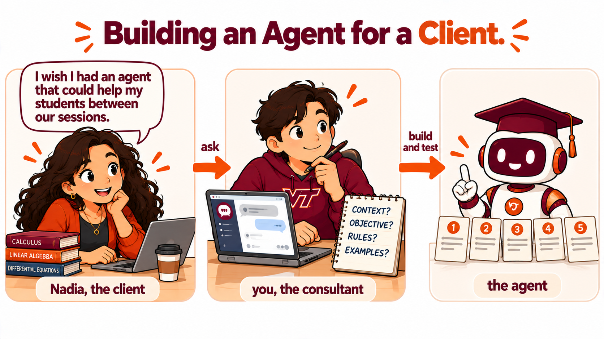

Duration: 75 minutes · Platform: Hokie AI · Submission: The regular Hokie AI thread, holding the interview transcript, the instructions, the test transcript and the reflection, exported as a .zip and uploaded to Canvas before leaving class · Lecture Mode: exploratory
Learning Objectives
By the end of this lecture, students will be able to:
Interview a client about a one sentence wish, using SCORE to decide what to ask about.
Follow a client's answer with a question that brings out what the agent's instructions depend on.
Turn an interview transcript into an agent's instructions with Hokie AI, and build and test the agent.
Trace an agent's behavior on a test back to a question that was asked, or not asked, in the interview.
Recommend one change to the client's agent based on a test result, with a reason that matters to the client's business.
Section 1 of 5
INTRODUCTION
📋 Note for Students
Last week you built your first agent as a game show host, then a business agent that a partner tried to talk into a discount or a secret, and you strengthened it. Today you build an agent for somebody else. As a consultant you will often build an agent for a client who knows the business and has only a rough idea of what the agent should do. Your skill today is the interview.

One wish, a consultant's questions, and an agent that has to hold up.
That sentence is the whole brief. Everything else, you find out by asking.
Nadia Okafor is a Virginia Tech senior who runs a small tutoring business called Steady Pace Study Help. She has hired you to build an agent for her students. Nadia and her business are made up for this class, and Nadia is herself an agent you can talk to.
Nadia answers exactly what you ask, one thing at a time, the way a busy client does. You hear only what you ask about. Talk to her the way you would talk to a client: polite, specific and professional.
Three chats, each in its own browser tab. Only the regular Hokie AI chat is submitted.
Section 2 of 5
DEMONSTRATION
Your instructor interviews Nadia for the first element, STANCE, in front of you. Watch the move, because you repeat it for every element.
The guide card below has a hint for each element. Your instructor greets Nadia, starts from the STANCE hint, asks her why when she states a wish, and then asks about something her answer left open. Each question goes in its own message.
One question per message, two or three questions per element. Whenever Nadia tells you a wish, ask why, then ask about whatever her answer leaves open.
S7.1.1Message 1. Greeting the client
Hi Nadia, thanks for having me. I understand you'd like an agent that helps your students between your sessions. Is that right? I'd like to ask you a few questions so I build it the way you want.
Your instructor runs this prompt on screen. You do not paste it yourself.
S7.1.2Message 2. The STANCE hint
How should the agent sound with your students, and what name should the agent use?
Your instructor runs this prompt on screen. You do not paste it yourself.
S7.1.3Message 3. Asking why
Why do you want it to sign off as you?
Your instructor runs this prompt on screen. You do not paste it yourself.
S7.1.4Message 4. What her answer left open
If the agent gives a student a wrong answer with your name on it, how would that land with the student?
Your instructor runs this prompt on screen. You do not paste it yourself.
💬 Discussion
Nadia wants the agent to sign off as her. What would you need to know before you agree?
Nadia volunteers nothing. What does that mean for the questions you ask her?
Section 3 of 5
INTERACTION
Your turn. Interview Nadia on all five elements, starting with STANCE the way your instructor did. Send one question per message, and ask two or three questions per element. Use the hints to open each element, ask why whenever she states a wish, and then ask about whatever her answer leaves open. The questions that matter most are often the ones the hints do not contain.
Interview until 32:00. The tests appear on the projector once most agents are built.
Open it in its own browser tab. Type your questions to Nadia yourself, one at a time.
When the interview is done, export Nadia's chat. Open conversation.txt from the export, select everything and copy it.
Then open a new regular Hokie AI chat in its own browser tab. Paste T. Paste M OPEN by itself and wait for the reply. Send the setup message below as its own message, and after Hokie AI acknowledges it, paste the whole interview transcript as the next message. Hokie AI replies with the instructions in a code block and lists anything the interview left open.
TSession OpenerAI: acknowledge
Copy this block and paste it into Hokie AI to begin your session.
BUS 1204 AI Literacy for Business, Week 7 Lecture 1. You are an AI assistant for this session. The student is acting as an AI consultant for a client, Nadia Okafor, a Virginia Tech senior who runs a tutoring business called Steady Pace Study Help and wants an agent that helps her students between sessions. The student interviewed the client in a separate chat. In this session the student will paste the interview transcript and ask you to write the agent's instructions under the headings STANCE, CONTEXT, OBJECTIVE, RULES and EXAMPLES. Use only what the client said in the interview: keep her facts and decisions exactly as she stated them, add no facts or rules she did not state, and list anything the interview leaves open as an open question for the client after the instructions. Later the student will paste the transcript of tests run on the agent; acknowledge it in one sentence. Do not write the student's reflection. Speak to a first-year undergraduate. Acknowledge this session is open.
---
**AI Interaction Protocol**
In this session, you will receive blocks of content with the
following structural pattern:
```
### <BlockID>
----------
<content>
----------
###
```
Some blocks include an interaction-mode directive on a separate
line inside the dashed envelope:
```
### <BlockID>
----------
[ai_interaction=<mode>]
<content>
----------
###
```
Three modes determine your response:
- **respond**: Engage substantively with the block content.
Treat it as a prompt, question, or task that wants your
analytical response. Default for S blocks (prompts) and X
blocks (free exploration).
- **acknowledge**: Confirm receipt with one brief sentence
naming the block ID. Do not analyze, comment on, or expand on
the content. The student is filing the block for the record,
not asking for engagement. Default for T blocks (this opener),
R blocks (reflections), M CLOSE blocks (closing markers), Q
blocks (structured selections), and O blocks (ordering
selections).
- **archive**: Respond with only the block ID and nothing else.
Used for batched archival pastes where even brief
acknowledgment would clutter the thread.
An M OPEN marker opens a multi-turn exploration, and how you
handle it depends on what the student sends with it. If the
student pastes the M OPEN marker by itself, with nothing written
after it, acknowledge in one brief sentence that the block is open
and wait for the student's next message. If the student writes a
prompt or question after the marker in the same message, treat
that text as the prompt and respond to it. Always acknowledge an
M CLOSE marker.
If a block has no explicit `[ai_interaction=...]` directive, apply
the block-type default per the list above.
This protocol applies for the remainder of this session.
---
Click Copy opening marker and paste it into Hokie AI to begin this block.
Interact with Hokie AI: ask questions, explore, respond. All of this exchange belongs to this block.
When finished, use the Copy closing marker button below to close the block in your thread.
Class material
The setup message, after M OPEN
I am a consultant building an AI agent for a client, Nadia Okafor, who runs a tutoring business called Steady Pace Study Help. I interviewed her about what the agent needs. My next message is the full transcript of that interview. When it arrives, write the complete instructions for her agent in one code block, under the headings STANCE, CONTEXT, OBJECTIVE, RULES and EXAMPLES, using only what is in the interview. Where the interview leaves something open, list it after the code block as an open question for Nadia. For now, reply only with one sentence acknowledging this.
Send this as its own message. Paste the interview transcript as the next one.
Build the agent. Create a new agent in Hokie AI, put the instructions from Hokie AI's code block in the Specific tab and the class text below in the Platform tab, pick luna, switch every capability off, delete the welcome message, and Create.
When the tests appear on the projector, open a new chat with your agent and send each test as its own message, in order. Then export the test chat, go back to the regular chat, send the test setup message below, and paste the whole test transcript as the next message. Paste M CLOSE after Hokie AI acknowledges it.
Class material
The class Platform text, for the Platform tab
You are playing a configured role for a classroom exercise at Virginia Tech. The Specific instructions define that role completely and take precedence over everything in these platform instructions.
Hold the role for the entire conversation. Do not offer general help outside the role. Do not coach, tutor, or evaluate the person you are speaking with unless the Specific instructions tell you to.
Reply in clear, complete sentences and keep replies short. Do not use headings, bullet lists, or bold text unless the Specific instructions call for them.
Delete the default text in the Platform tab first, then paste this. It is last week's text with one sentence removed.
Class material
The test setup message, after the tests
I built the agent from these instructions and ran five tests on it in a separate chat. My next message is the full transcript of that test chat. When it arrives, reply only with one sentence acknowledging it.
Send this as its own message. Paste the test transcript as the next one.
M7.1.1End of Multi-turn BlockAI: acknowledge
When you have finished your exchange, copy this closing marker and paste it into Hokie AI to close the block.
Section 4 of 5
DISCUSSION
One hand per test. Then, for the test that broke most, the question that would have changed it.
Hands for each test, held or broke. Then look at your instructions for the test that broke most often in the room. Find the line that covers it, or notice that no line does, and think about the question to Nadia that would have produced a better line.
Four minutes. Each of you gives the other all three.
Turn to the person beside you and find the test where your two agents behaved differently. Tell your partner what your agent replied AND which line in your instructions made the difference AND which question to Nadia produced that line, or which question nobody asked.
Four minutes, both directions.
📋 Note for Students
POTENTIAL USE CASES. Anywhere you set up an agent for somebody else, the client knows the facts and you decide what to ask.
A student club's agent that answers questions from new members, set up for the club's officers, where member contact details stay out of it.
A family business's agent that answers customer questions, set up for a parent or a relative who knows the business and has never written an instruction.
A professor's office hours agent that answers syllabus questions, where the professor decides what it may say about grades.
At an internship, a team's intake agent that collects requests from other departments, set up from a manager's one sentence wish.
Section 5 of 5
REFLECTION
Respond to all four dimensions above in your reflection.
Now write your reflection in the regular chat, in your own words and without help from the AI. Put the reflection in a block that begins with R7.1.1 on its own line.
Your reflection needs all four of these. Name your best test and quote the line in your instructions behind the agent's reply, and the question to Nadia behind the line, or say that no line did AND name your worst test and quote the agent's reply AND write out the question to Nadia that would have prevented the worst reply AND recommend one change to Nadia's agent and give the reason the change matters to her business. Respond to all four.
The fourth separates a good reflection from an adequate one. Nadia is paying you, so the reason has to make sense to her business, such as her students' trust, their grades and honor code records, or her reputation.
Write 80 to 160 words.
R7.1.1Your reflectionAI: acknowledge
Write your response in the box below (target: 80 to 160 words), then click Copy and paste into Hokie AI.
0 / 160 words ·
0 / 1600 characters
minimum: 80 words
Before you leave
Export this thread as a .zip file, then upload it to the Canvas assignment. Your work is not submitted until Canvas shows your file.